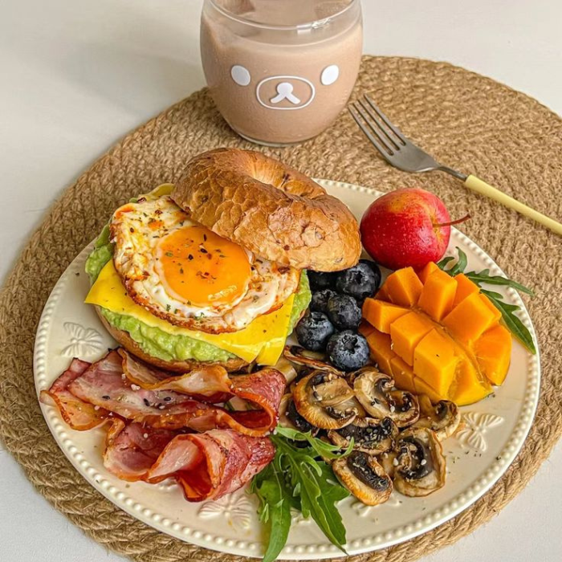
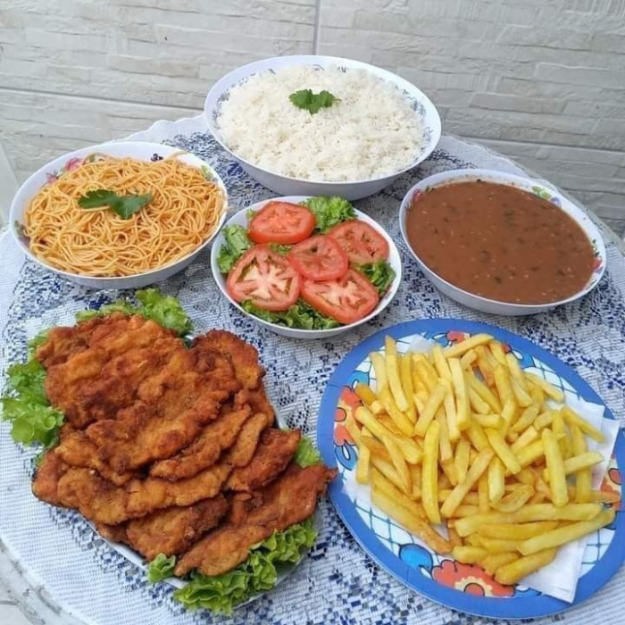
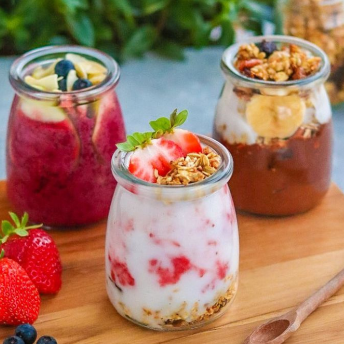
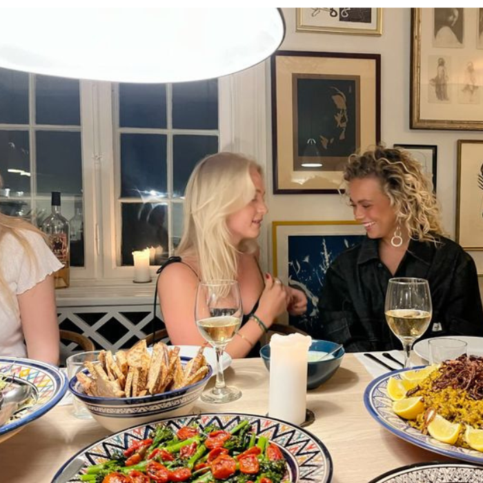

Responda às perguntas e descubra pratos incríveis que combinam com seu estilo de vida e paladar.
Estudos mostram que quem prepara suas próprias refeições tende a ter uma alimentação mais equilibrada, consome menos ultraprocessados e, como resultado, pode até viver mais.
Café da Manhã

Almoço Perfeito

Lanches Deliciosos

Jantar Reconfortante

Parabéns! 🎉
Você concluiu o quiz! Com base nas suas respostas, preparamos um e-book exclusivo com 40 receitas incríveis, perfeitas para o seu dia a dia. O acesso será enviado para o Gmail cadastrado, então, após a aquisição, é só conferir sua caixa de entrada e começar a cozinhar deliciosos pratos!